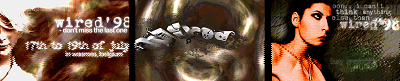
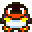

Annonces emploi
[10/08/99]
Elles ont été mises a jour, have a look.
(Chandra / Orange Juice)
Dialogos 99
[10/08/99]
Unlock/Vantage organise un bustrip au départ de la Suisse pour la Dialogos 99 . Le bus traversera la suisse, en partant de Basel/Bale puis passera en France et rapidement après rejoindra l'allemagne. Ils prendront tout ceux qui seront sur leur route. Vous pouvez avoir de plus amples renseignements en cliquant sur le titre.
(Yes / Orange Juice)
Scene.org embauche !
[10/08/99]
Scene.org est a la recherche de programmeurs ASP, CGI et d'un webmaster actif. Si vous êtes intéréssé alors contactez staff@scene.org!
(Yes / Orange Juice)
ASM99 resultats et prods
[09/08/99]
ftp://ftp.scene.org/incoming/ASM99/ pour toutes les productions et ftp://ftp.scene.org/incoming/ASM99/asm99results.txt pour les resultats.
(Yes / Orange Juice)
Webcams
[21/07/99]
Hop, vala quelques webcams de la demoscene.
(Chandra / Orange Juice)
Razor 1911
[20/07/99]
Razor 1911 reforment leur section Demos. Ils ont besoin de coders, musiciens et artistes 3D. Plus d'infos sur http://you.genie.co.uk/rzr.demos/.
(Chandra / Orange Juice)
Inscene report
[18/07/99]
Le week-end du 09-11 juillet s'est déroulée la INSCENE première du nom, seule party belge depuis la regrettée Wired. Bien que le nombre de participants était inférieur à ce que les organisateurs espéraient (une 50aine de personnes), le fun était au rendez-vous. Des records ont été établis au lancer de DD 4kg : lancer le plus court (50cm) et le plus long (10m30) ;-)
En raison du manque de participants, il n'y a pas eu bcp d'entrées dans les diverses compo ; mais nous avons découvert des bonne prods, comme le jeu 100k de PPPTeam et la fameuse demo linux d'Aspirine - la seule demo :(
Pour conclure, ce fut une party très sympa qui valait le déplacement. J'espère qu'il y aura encore plus de sceners l'an prochain et que la INSCENE va devenir la nouvelle Wired - pour le fun, c'est bien parti ;)
(tOmCaT / Logout)
LTP3
[17/07/99]
La party LTP3 arrive a grands pas. Beaucoup d'étrangers sont attendus, il n'y a qu'a voir la liste sur le site. Pratiquement les 3/4 des places ont déjà été réservés !! Alors dépechez vous, et n'oubliez pas que seul l'envoi du chèque à l'association Orange Juice confirme définitivement la reservation de vos places.
(Chandra / Orange Juice)
Mr Boom 3.0
[14/06/99]
Il est de retour avec ses bombes, de retour avec ses couleurs disco. C'est du réseau, c'est jusqu'a 8 joueurs, c'est fait par remdy, un démomaker de dentifrice, et ca supporte la GUS. Allez faire un tour sur en cliquant sur le titre.
(Yes / Orange Juice)
USMPlay, v1.1
[10/06/99]
FreddyV a releasé une nouvelle version de USMPlay (v1.1 finale), cliquer sur le titre !
(Chandra / Orange Juice)
Realtech & Olympus
[09/06/99]
Et non, ils ne sont pas morts ! =) D'ailleurs ils ont enfin trouvé le temps de releaser un jeu fait il y a un an. Mais laissons la parole à Pollux :
Heroes, une sorte de Nibbles ameliore (pleins d'options, de graphismes, de musiques, de niveaux - et un editeur de niveau) developpe par {Guen,Tnk,Alexel}/RealTech et moi-meme (pollux/Olympus) est dispo. Le jeu tourne sous DOS (avec EOS, et Midas) et est gratuit. Heroes etait fini depuis presque un an deja, mais c'est seulement maintenant que l'on prend le temps de le distribuer.
(Chandra / Orange Juice)
Photos de la Takeover'99
[09/06/99]
Cliquez simplement sur le titre =)
(autres photos : http://trashcan.planet-d.net)
(Chandra / Orange Juice)
Linux Game Compo
[09/06/99]
Il y aura une fast game compo le 20 juin sur #linuxscn, Ircnet. Des équipes formées (gfx/zic/code sous linux) devront faire un jeu (pas de limite de taille) en 6 heures sur un thème donné. Le temps de début et d'autres information seront données sur la page de #linuxscn (cf le lien du titre). Mailer vos questions à redpingu@????.
(Chandra / Orange Juice)
Takeover 99
[05/06/99]
Nous sommes à Eindhoven en Hollande pour la Takeover'99.
Lisez le report live et revenez souvent !
(Yes / Orange Juice)
Arf!Party Fast Compos
[28/05/99]
Les results des fast compos de la Arf!Party sont en ligne !
(Chandra / Orange Juice)
Icone Compo
[23/05/99]
Orange Juice lance une compo "icone" ! Il s'agit d'une fast gfx compo, alors allez lire toutes les infos là !
(Chandra / Orange Juice)
V.I.P
[12/05/99]
La VIP ( Very Important Party ), organisée par PoPsY TeAM débarque sur la planete scene. Mais attention, les places sont limitées et les inscriptions se terminent début juin. Alors on prépare sa brosse à dents Popsy, on laisse sa panoplie de gamer à la maison et on rapplique le 2 Juillet, les poches pleines de prods, histoire de trouer sur place les participants de la party la plus cool de l'année.
Et si vous étes encore sceptiques, vous pouvez dowloader l'invit sur le site officiel de la VIP (click on title ;). Vous y trouverez également toutes les infos ainsi que les plans d'accés à la party.
(Chandra / Orange Juice)
Plug - In : an instrumental trio
[06/05/99]
Putin ca fait du bien d'avoir des news comme celle la à vous donner. Les anciens s'en souviennent (un slip simpson taille 7 ans ca marque) et les nouveaux prennent à chaque fois leur claque en écoutant ses modules. Et bien maintenant c'est dans un groupe de musique qu'on le retrouve. Moby is back :)
(Yes / Orange Juice)
Shad 2
[06/05/99]
On attendait ca avec impatience et bien c'est fait, la shad2 a été releasée.
(Yes / Orange Juice)
Kenet
[01/05/99]
Design above all.
(Yes / Orange Juice)
Universe
[01/05/99]
Le site du groupe russe Universe a bougé :) Updatez vos bookmarks !
(Yes / Orange Juice)
Muguet ?
[01/05/99]
Orange Juice sera ouvert le samedi 1er mai (sisi) ! C'est pas la fête du travail pour tout le monde hein :)))
(Yes / Orange Juice)
ukOnx Party'99 download now
[01/05/99]
Pratiquement toutes les prod's sorties sont dispo sur :
www.multimania.com/ukonx99. Cette partie qui c'est déroulée mi-avril à reunie 150 personnes et était organisée par ukOnx et Net Generation. Et voilà l'adresse du site OFFICIEL :)
http://web.synapse-dev.fr/manu/ukonx99
(Yes / Orange Juice)
Evoke 99
[01/05/99]
La Evoke se tiendra les 20.21 et 22 août 1999 en Allemagne. Allez faire un tour sur leur site pour plus d'infos.
(Yes / Orange Juice)
Shad 2
[01/05/99]
Non Shad 2 n'est pas encore sortie. Oui elle serai bientôt prête et Orange Juice vous la proposera rapidement. Allez Cocoon and Syndrome Team, encore un effort ;)
(Yes / Orange Juice)
Equinox - Oldschool time
[11/04/99]
Le nouveau site web d'Equinox (le fameux groupe ST) est en ligne. Vous pouvez y trouver une demo ST commençée en 1992 mais jamais finie. Jusqu'à cette semaine où Kheops/Equinox l'a releasé en terminant le loader. En plus, ca tourne sous pacifist ! Oldschool rulzzz
(Yes / Orange Juice)
Arf!Party
[02/04/99]
La Arf!Party, organisé par Arf!Studios, approche a grand pas, et il n''y a que 250 places (avec machines) alors un bon conseil, reservez au plus tot, vous serez sûr d'entrer! Toutes les dernieres infos, plans ou bulletin d'inscription disponible sur le site officiel de la Arf!Party
Ah oui, une derniere chose... l'intro invit est ENFIN online! Alors on se grouille de la downloader
(Chandra / Orange Juice)
Des sources !
[30/03/99]
Fantastique! Statix distribue les sources de sa démo BLEAM qui a gagné le compo demo windows de l'assembly en 1998. Vous pouvez récupérer tout ca sur http://ban.joh.cam.ac.uk/~alex.
Hey alex, I love you ;)
(Yes / Orange Juice)
Nouveau serveur FTP mirroir !
[11/03/99]
Fatigué de tous ces serveurs FTP auxquels ils faut se connecter pour avoir les dernières releases, Redhound a décidé il y a quelques temps que ce serai bien de mettre en place un enorme mirroir FTP qui contiendrai toutes les grosses archives de la scene. Ca a prit du temps a mettre en place, mais maintenant les 3 plus gros y sont :
* The Hornet archive -> /pub/hornet
* The Scene.org archive -> /pub/scene.org
* The Trebel archive -> /pub/trebel
(source : comp.sys.ibm.pc.demos)
(Chandra / Orange Juice)
Parties Américaines
[07/03/99]
Prêt à prendre l'avion ? :)
Bang : http://www.scene.org/bang!/
Sb99 : http://skaro.nightcrawler.com/sb99/
(Yes / Orange Juice)
Hugi #14
[07/03/99]
La 14ème édition du diskmag HUGI est sortie ! Cliquez sur le titre pour la récupérer.
(Yes / Orange Juice)
Téléchargez !
[07/03/99]
Les productions de la volcanic 99, de la Hype 99 et de la Ambience 99 sont téléchargeable sur ftp://ftp.scene.org
(Yes / Orange Juice)
Past Finale
[07/03/99]
La version finale de PAST (Orange Juice) sera téléchargeable dès aujourd'hui.
(Yes / Orange Juice)
TakeOver 99
[07/03/99]
Le site de cette fameuse partie est en ligne.
(Yes / Orange Juice)
Mind's Evolution Finale
[07/03/99]
La version finale de la demo de Popsy Team (3ème à la volcanic V) est online.
(Yes / Orange Juice)
Une party pres de Paris
[27/02/99]
Cela fait un moment que la Central Party est en gestation. Ses dates sont enfin confirmées pour les 30, 31 Oct et 1er Nov 1999, à Elancourt dans le 78. Env. 500 personnes, gros acces au net, sono, ecran géant etc...
Les organisateurs recherchent des graphistes pour faire le logo de la CP (email).
(Chandra / Orange Juice)
Volcanic V - Les resultats
[24/02/99]
Le debut du report Orange Juice est la et les resultats de la volcanic V sont ici. Go go go :)
(Yes / Orange Juice)
** NOTE OJUICE **
[16/02/99]
2 demomakers français viennent de perdre un membre très proche de leur famille. Qu'ils sachent que toute l'équipe d'Orange Juice se joint à moi pour leur apporter le maximum de courage et nos condoléances.
(Yes / Orange Juice)
Frigo - Un Coeur à prendre
[16/02/99]
Frigo cherche une frigounette pour amitié et plus si affinité. Si tu es blonde avec de gros seins rejoins moi à la volcanic.
Je t'aime, Je veux ton corps.
(Yes / Orange Juice)
A la recherche de graphistes.
[28/01/99]
Les meilleurs graphistes du monde sont recherchés pour un musiquedisk Funk ! Pas de dessins basse résolution. Vous voulez participer au cd de Theralite ? Ctc Gainx sur ofalk@???? pour rejoindre leur équipe !
(Yes / Orange Juice)
TRIP 99!
[28/01/99]
La TRIP se déroulera du 25 au 28 mars 1999 à coté de Florence en Italie ! Les prix sont fabuleux : La dernière station de travail de SiliconGraphics, une Station Spark 5 de Sun, un scanner 3D + gant + graveur 3d de Roland, une table de mixage numérique et un système direct to disk par Roland, un clavier professionnel par Roland et un écran 19". Pour les français, Deathstar qui organise la TRIP (et qui travail à Paris sur leur jeux), organise aussi un bus au départ de Paris !!! Email sur le site.
(Yes / Orange Juice)
Volcanic Party 5
[27/01/99]
Le site de la Volcanic 5 est online depuis quelques temps, mais comme on a oublié de vous le dire, ben on répare. Allez-y , c'est quand meme sans doute la plus renommées des parties francaise (après la defunte Saturne) ! (moi, j'y serai, na =)
(Chandra / Orange Juice)
ARF!Party'99, the fun, nowhere else
[26/01/99]
ARF!Studios, le petit label qui monte, s'est enfin décidé après mûre reflexion d'organiser une CP! Tout le rituel des autres parties (compos, réseau, etc..) mais remanié a la sauce Arf!
Alors viendez, viendez avec des amis! Et pis viendez sûrfer comme des cyberdjeûnz sur notre chouette maison-page pour en savoir plus ! (Arrakis & Shodan / ARF!Studios)
(Chandra / Orange Juice)
Keyboard Party II
[11/01/99]
Ca y est, le site de la Keyboard Party II est arrivé...
Il est toujours en construction, mé il é "on ze ouèbe".
On peut attendre le max de monde (participants comme public avec +5000 personnes attendu) (GuY / Dobermann Team)
(Chandra / Orange Juice)
Servo'99
[07/01/99]
La Servo'99 se déroulera entre le 21/mars/99 ou le 21 juin/99 a Marseille mais aussi en Triplex avec 2 autres grandes villes de France.
Je lance un appel pour trouver des co-organisateurs de Serv099. J'ai en partie les sponsors... (christian artin)
(Chandra / Orange Juice)
Ambience 99, le site
[06/01/99]
Le nouveau site de la party Ambience 99 se trouve à l'URL que vous pouvez atteindre en cliquant sur le titre de cette news (piouuuh, tout ca pour avoir une news de 3 lignes ;)
(Chandra / Orange Juice)
Les productions TP8
[29/12/98]
Z / Nomad a reussi à choper les meilleures productions de la TP8 ainsi que les resultats.
(Yes / Orange Juice)
Le syndrome Coupe du Monde ?
[29/12/98]
2 groupes français ont gagnés les deux premieres places de la "THE PARTY VIII" .NOMAD et BOMB ont eu chacun plus de 5000 points pour le premier et plus de 4000 pour le second. Un très joli doublé: Ecstasy, Skal, Krafton, Made, Titan, and Djamm rulz.
(Yes / Orange Juice)
Le REPORT LIVE TP8 !!!
[28/12/98]
Le report live de la THE PARTY 8 par Sparcus / Nostalgia (Souvenez vous de la prochaine TakeOver 99 !). En plus y a des surprises !!!
Orange Juice : Toujours devant
(Yes / Orange Juice)
The Party 98 Release
[28/12/98]
Quelques productions en direct de la TP8 et des photos de bon français en vadrouille :).
(Yes / Orange Juice)
Hugi #13 online
[28/12/98]
La version "En ligne" du mag Hugi est dispo. Cliquez juste sur le titre.
(Yes / Orange Juice)
Un nouveau mag : Heroin
[16/12/98]
Un nouveau mag, un nouveau point de vu sur la scene demo ? Allez vous faire votre propre opinion.
(Yes / Orange Juice)
PAIN EST SORTI !!
[10/12/98]
Le dernier numéro de PAIN est déjà sorti. Allez vite le downloader !
(Yes / Orange Juice)
Le diskmag Hugi est sorti.
[06/12/98]
Le numéro 13 du Hugi est sorti hier. Pleins d'articles, pleins de rumeurs et d'infos. Encore un très bon numéro.
(Yes / Orange Juice)
Slash Party II
[02/12/98]
Myke / Lucis Magia vous invite à venir à la Slash Party II qui se déroulera fin août. Cliquez sur le titre pour apprécier sa prose =)
(Chandra / Orange Juice)
Beam
[28/11/98]
Le site Web du mag "bare electronic art magazine" par black maiden´s a été redesigné. Il est en ligne dès maintenant.
(Yes / Orange Juice)
Ambience 99 Infofile
[19/11/98]
L'Ambience 99 aura lieu les 26-27-28 Février 1999 à Venlo - Holande. Beaucoup de compos, gamerz séparés, plus de 800 démomakers! Downloadez l'infofile (Link en titre) !
(Yes / Orange Juice)
Trebel - Nouvelle archive ?
[18/11/98]
Une nouvelle archive dédiée à la scene (comme l'était Hornet) arriverait-elle ? Ils ont vraiment l'air de travailler dessus.
(Chandra / Orange Juice)
MOVEMENT'98
[18/11/98]
L'inscription ONLINE pour la MOVEMENT'98 a débuté depuis le 14 novembre. (pj dynamix ~ comic pirates)
(Chandra / Orange Juice)
Hugi Size Coding compo #5
[18/11/98]
La Size Coding Compo Hugi #5 a commencé le 8/11 ! Essayez de faire de votre mieux pour gagner !
(ndc: c moi qui ai rajouté la news là, j'espere que la deadline n'est pas passée =)
(Yes / Orange Juice)
Nouveau Site ! Tpolm.Com
[17/11/98]
Le site web de Tpolm est ouvert. Il n'y a qu'un quizz online mais le site sera mis à jour régulièrement avec d'interessants projets scientifiques.
(Yes / Orange Juice)
PAIN ! Lien Permanent
[17/11/98]
C'est le début d'une longue histoire d'amitié entre Orange Juice et Pain (ndc: manque plus que la confiture ;). Prochainement vous trouverez un lien permanent vers une page de download de Pain. Cliquez sur le lien pour voir ce que je veux dire.
Merci à Fred ! Pain RULZZ
(Yes / Orange Juice)
Shine #3 !
[17/11/98]
Vous voulez tout savoir des dernières rumeurs sur la scene ? Une nouvelle version de Shine est sortie !
(Yes / Orange Juice)
Demonix
[17/11/98]
Demonix (des demos pour unix et autres plateformes) a déménagé. Jettez aussi un oeil sur les newsgrp linux.demo webring.
(e605 / sdi^tojs!x^sure)
AXIA - un jeu par des demomakers
[17/11/98]
Des Démomakers font un nouveau jeu (Axia). Ce sont :
Dark Avenger, Pure Evil, Windsinger from DDD Tran Mesonyx, Mot, et Amusic d'Iceland et de Grece... Orange Juice supporte la scene et l'après scene :).
(Yes / Orange Juice)
La Movement 98 sur le net !
[28/10/98]
Movement'98 va avoir lieu autant sur place (Israel) que sur Internet ! Vous pourrez voter, concourir, voir des vidéos live, des interviews et plus encore ! Cette fois ci ce ne sera pas encore un site web chiant, mais un site actif, vous permettant de participer a la party. Vous vous sentez interessé ? D'autres détails croustillants vont arriver.
contact: Civax@beit-eli.gov.il
party email: mov98@????
(civax)
(Chandra / Orange Juice)
Soundtracker (x11/linux)
[28/10/98]
C'est possible ! Un tracker xm/mod sous x11/linux.
(e605 / sdi^tojs!x^sure)
NoooN ! Le site de RA
[25/10/98]
Vous ne connaissez pas RA ? Vous ne connaissez pas Nooon ? ? Ok, alors allez vite voir leur site web.
RA, on est impatient d'avoir toutes tes magnifiques pics !
(Yes / Orange Juice)
Volcanic 5
[23/10/98]
Suite à certaines rumeurs concernant la Volcanic 5, résidut de tout ce qui avait été dit sur la Volcanic 4, j'ai demandé à Kheops / Mentasm^Nozor Prods d'éclairer notre lanterne.
Après en avoir discuté avec les orgs, il m'a sorti cette petite prose, à lire absolument !
(Chandra / Orange Juice)
Bouffe à Paris
[23/10/98]
Le groupe de crack DSK organise une bouffe BBS (ou irc...) place d'Italie le samedi 31 octobre. RDV devant le cinéma à 19h. (remdy)
(Chandra / Orange Juice)
Une CP en Argentine !
[23/10/98]
L' "Asociación Civil Intervalo & Krisalida" organise la première demoparty en Argentine et peut-être la plus grosse jamais organisée en Amérique du Sud. "The Flash Party" se tiendra à Buenos Aires du 25 au 27 décembre. Jettez un oeil au site web (la connaissance de l'Espagnol est nécessaire =))
hC/The Imago Project
(Chandra / Orange Juice)
Pulse - Chomage
[20/10/98]
Le chomage arrive lui aussi sur la scene. Des membres de Pulse Pologne ont été virés !!!
Falcon, KeyG, Spy, Lazur, Yoghurt, Lucky et Technomancer sont libres ! Il est certain qu'ils vont rejoindre d'autres groupes sous peu.
(Yes / Orange Juice)
La Movement'98 est en ligne
[18/10/98]
La Movement est la demoparty annuelle en Israel. Visitez le site web et découvrez la scene Israelienne. L'Invitation pour la party sera bientôt disponible.
contact: civax/moon hunters (civax@beit-eli.gov.il)
email: mov98@????
(Chandra / Orange Juice)
Evoke web
[18/10/98]
Les pages web de l'Evoke ont été completement redesignées. Toutes les productions de 1998 sont désormais disponibles.
(Chandra / Orange Juice)
Tuner
[11/10/98]
Le but de ce site tuner.com est de faire des compos de modules. Les modules sont fabriqués a partir de samples packs crées par les musiciens eux memes.
(Chandra / Orange Juice)
Th3 Italian Gathering 1998
[11/10/98]
JapoTek a gagné la compo demo de l'Italian Gathering 1998 avec Dual Soul (http://www.cis.it/japotek).
(Chandra / Orange Juice)
Le concours RC5 avec Distributed
[01/10/98]
Orange Juice a créé un team "Demoscene" sur Distributed.net. Rejoignez nous ! On part un peu en retard, mais on monte tres vite en place, il suffit d'inscrire un maximum de machines sous votre email (il y en a deja 8 qui bossent pour moi ;). Cliquez sur le titre de cette news !
(Chandra / Orange Juice)
Comic Pirates succédant Hornet ?
[30/09/98]
Tonic / Comic Pirates travaille sur un gros FTP dans le but de succéder à Hornet. Mais comme vous le savez, un nouvel Hornet Archive ne peut être géré par une seule personne, alors is vous vous sentez prêt à participer, contactez Tonic. (Makke / Comic Pirates)
(Chandra / Orange Juice)
Compos GFX
[27/09/98]
Deux nouvelles compos sur le fameux PiXel !
Une pour le diskmag Hugi:
http://www.pixel.scene.org/compo_hugi.html
Une pour le site Network (http://scene-central.com)
http://www.pixel.scene.org/compo_network.html
(Yes / Orange Juice)
Hornet nous quitte
[27/09/98]
La plus mauvaise nouvelle que l'on puisse vous annoncer. La fin d'une Ere, l'Archive Hornet ferme. "Finalement, l'archive va être démantelée le plus tôt possible. Toutes les pages html vont êtres effacées. Le moteur de recherche désactivé. Le répertoire /incoming va être répertorié puis effacé. Tous les sites hébergés vont sur de nouveaux hébergements. Les sites miroirs vont se désolidariser. A ce moment la partie web de l'Hornet Archive n'existera plus."
Orange Juice vous salue, vous tous d'Hornet.
(Yes / Orange Juice)
IT Gathering, démo gagnante
[27/09/98]
"Dual Soul" by JapoTek à gagné l'Italian Gathering '98 (11 au 14 septembre). http://www.cis.it/japotek/
(Yes / Orange Juice)
GfxZone déménage !
[27/09/98]
Notez la nouvelle adresse de Gfxzone (http://inf.ml.org/scenegfx) et n'oubliez pas de mettre à jour vos bookmarks.
(Yes / Orange Juice)
Compo 30mn sur #PIXEL
[24/09/98]
Toutes les prods du 23/09/98 avec les résultats.
Feather + Smoke + Sh^ar + Thor inclus.
N'oubliez pas visiter la homepage de #PIXEL (http://pixel.scene.org/)
(Yes / Orange Juice)
PTC 2.0 Api ! L'interface
[21/09/98]
Gaffer vient juste d'annoncer que l'API pour PTC 2.0 est presque prête. Les versions Beta/alpha sont dispo.
(Yes / Orange Juice)
Scene.Org ! Generation Next :)
[21/09/98]
Redhound améliore Scene.org !
comp.sys.ibm.pc.demos, comp.graphics.algorithms, comp.compression et comp.compression.research peuvent maintenant être accédés via news.scene.org.
(Yes / Orange Juice)
La HomePage de #Pixel
[21/09/98]
Le canal IRC #pixel a désormais une nouvelle homepage. Elle contient toutes les news relatives à #pixel : la liste des gens qui passent dessus et les resultats des fast compos (30mn) qui ont lieu régulièrement sur #pixel. Elle est ausi ouverte à toutes les suggestions relatives au graphisme.
(Yes / Orange Juice)
Panard Vision SDK DJGPP
[21/09/98]
Codé par Olivier Brunet, "Panard Vision" est un Moteur 3D temps réel complet, portable et gratuit (pour une utilisation non commerciale) dédié a un rendu rapide et de très bonne qualité sous Win32, Dos et Linux. Seul le rendu soft est supporté avec DJGPP (par d'accélération materielle). Un patch pour DirectX 6 est disponible.
(Yes / Orange Juice)
Dialogos 98
[21/09/98]
Demoparty, 13-15/11/98 (jena.allemagne)
Contrairement aux autres parties, celle-ci ne va pas avoir lieu dans un gymnase ou une salle des fêtes. Cette fois-ci vous allez pouvoir expérimenter le vrai esprit "demo" combiné à l'atomosphère d'une grande discothèque. Le 'Kassablance Gleis 1' propose toutes les options nécessaires pour passer un bon week-end, comprenant l'équipement sonore, lumineux et vidéo complet. Nous vous offrons un programme complet de musique d'ambiance, de "show live", show DJ et bien entendu toutes les compétitions typiques d'un demo party PC. Cette party se prépare comme un évenement plutôt spécial, une petite douceur parmis les parties de cette année.
Venez pour apprécier quelque chose de différent, venez à la Dialogos '98 !
(e605 / sdi^tojs!x^sure)
EVOKE 98 - Les productions
[21/09/98]
Redhound a préparé pour le download quelques prods de l'Evoke 98 (Aachen / Allemagne, 12-13 septembre). Pompez les et faites vous votre opinion sur les prods.
(Yes / Orange Juice)
RTS - Les résultats
[21/09/98]
Vous pourrez trouver les resultats de la RTS party ici.
Elle a eu lieu en France, près de Grenoble (du 5 au 7 septembre).
(Yes / Orange Juice)
Slash Party
[01/09/98]
Le report de la Slash Party est dispo.
(Chandra / Orange Juice)
Mod Plug Player
[01/09/98]
Encore des nouvelles versions de la célèbre suite pour les modules sous Windows. Mod Plug Player en est à la v1.38 (corrections de bugs, meilleure qualité, et quelques nouveautés comme le mode "mini-bar", genre winamp). Mod Plug Plugin (pour Netscape, MSIE ou Opera) en est à la v1.91.02, c'est une mise à jour par rapport au player. Le Mod Plug Tracker quant à lui en est à la beta 2.3 (nouvel égaliseur graphique, librairie d'instruments, ...).
(Chandra / Orange Juice)
GFX Zone
[01/09/98]
GFX Zone fait régulièrement des comptes rendus de parties ou autres choses rigolotes. Par exemple le dernier est celui du double-cd Dreams 2, la compilation de démos par Imphobia. Très bien fait...
(Chandra / Orange Juice)
Japanese Demo Competition
[27/08/98]
Je suis Shigeo Kusama, directeur de Countdown Groove, une télévision japonaise de dance music. Nous cherchons à promouvoir la demoscene au Japon. Actuellement nous organisons une competition megademo sur les TV japonaises et recueuillons les productions. C'est l'occasion d'être projeté devant 2 millions de téléspectateurs japonais, dont des milliers venant de l'industrie du jeu et de l'informatique.
La production doit durer maximum 10 secondes et comprendre une musique et un design originaux. La seule contrainte est d'utiliser le logo "CD GROOVE xxx", qui est le titre de notre émission. La deadline est le lundi 7 septembre 1998. La productions doit m'être envoyée sur mon email (cliquer sur le titre, écrire en anglais, ou japonais ;)
(Chandra / Orange Juice)
DreamHack '98
[27/08/98]
Bjorn Lynne (Dr.Awesome / Crusaders) sera sur place pour vendre des CD et il sponsorisera la party avec des prix pour les compos.
Il a été décidé qu'il y aura une compo Demo Atari s'il s'avère que vous en réclamez une. Merci de lire la rubrique Competitions.
(Chandra / Orange Juice)
The Demoscene Archive Volume 2
[21/08/98]
"Dreams 2, The Demoscene archive Volume 2", est disponible. Ce double CD produit par Imphobia contient les meilleures productions de Juin 96 à Juillet 98. Ce pack coûte (seulement !) dans les 90 FF. Pour plus d'information (avec liste complète des fichiers), pompez le fichier d'info ou envoyez moi un email.
(Darkness / Imphobia)
Les JEM 98
[17/08/98]
Bruce de Alternet a écrit un petit compte rendu des JEM 98. Pour ceux qui n'y étaient pas..
(Chandra / Orange Juice)
La liste des pseudos
[07/08/98]
Des drapeaux ont été ajoutés aux listes alphabétiques. Un grand merci a Zone / Psykotrope pour les gfx ! :-)
(Chandra / Orange Juice)
Invtro Slash Party
[07/08/98]
L'intro invitation de la Slash Party est dispo. Elle fait 2.6 Mo, mais c'est une démo win32 qui supporte de plus les cartes 3D.
(Chandra / Orange Juice)
Portage BeOS
[07/08/98]
L'opération de portage BeOS commence dès maintenant ! Si vous avez codé une démo, un soundtracker, un modplayer ou autre, contactez BrainLex maintenant ! Il se feront un plaisir de tenter le portage vers BeOS.
(Chandra / Orange Juice)
Webring francophone
[27/07/98]
La webring de la demoscene francophone est née grâce à Mephisto ! Hop, cliquez sur le titre.
(Chandra / Orange Juice)
Beam#1
[20/07/98]
Le numéro 1 de ce magazine d'art électronique est sorti ! Il contient des articles orientés art, des sondages et des comptes-rendus.
(e605 / sdi^tojs!x^sure)
Slach Party, l'intro-invit
[06/07/98]
L'intro d'invitation de la Slach Party est disponible
(Chandra / Orange Juice)
Linux & la Scene ?
[05/07/98]
Toutes les infos sur Linux par rapport à la scene sont sur ce très bon site.
(e605 / sdi^tojs!x^sure)
Le cd Tribute encore moins cher !
[05/07/98]
Le cd-rom Tribute ("La plus grosse collection de musiques sur cd-rom") est maintenant encore moins cher ! 55 FF (18 DM). Il s'agit vraiment d'un cd à but "non lucratif".
Jetez aussi un oeil au premier cd-audio de Sound-Runner, vraiment de la bonne track techno !
(e605 / sdi^tojs!x^sure)
Neithernor reportée (annulée)
[04/07/98]
La Neithernor Party 98 (prévue pour Août 1998 dans le sud de l'Allemagne) est reportée. Toutes les infos sur notre homepage.
Notre team organisera une autre party dans le sud de l'allemagne. Plus d'infos bientôt
(e605 / sdi^tojs!x^sure)
l'Archive Skynet
[30/06/98]
Le ftp était inaccessible à cause d'une mise à jour de l'OS. Nous espérons que ca n'a pas posé trop de problèmes aux groupes que nous hébergeons et nous excusons de ne pas avoir prévenu de cette mise à jour. (Redhound)
(Chandra / Orange Juice)
Hugi, le Diskmag
[28/06/98]
La version 11 du diskmag "Hugi" est sortie le 28 Juin. On y retrouve des gfx de Antony/Pulse, Hellfire/Haujobb et de Dendrite, et des musiques de Smash / Beam / Noise / Nothing / Tesko ainsi que 1 Mo d'articles.
Cliquez sur le titre.
(Chandra / Orange Juice)
La 3D en ligne comme jamais !
[21/06/98]
Vous êtes intéressé par la 3D, par l'optimisation des polygones dans le but d'un usage temps réel ? Alors jetez un oeil sur cette nouvelle technologie qui s'applique aussi bien au on-line qu'au off-line. Et encore plus interessant, les objets 3D stockés dans ce format peuvent êtres générés directement par un nouveau scanner 3D qui sera bientôt disponible à prix abordable !
Cliquez sur le titre pour pouvoir admirer...
(Chandra / Orange Juice)
Le report de la LTP2 est dispo
[17/06/98]
Le groupe Belge Move vient juste de rendre dispo le report de la LTP2. Jettez un oeil sur cette cool party française (avril 1998) organisée par Ribbon!
(Gandalf / Pulse^Aegis^Hyperopia)
Ecstasy, l'interview
[14/06/98]
DrYes nous a concoté une petite interview d'Ecstasy, coder dans le groupe Nomad et qui s'est fait remarquer notem-
ment avec la démo gagnante de la LTP 2, la SQUEEZED.
(Chandra / Orange Juice)
Wired 98
[02/06/98] 
L'intro invitation de la Wired 98 par Haujobb est disponible. Elle est très belle, allez la pomper !
(Chandra / Orange Juice)
The Demoscene CD-Shop
[29/05/98]
Le "demoscene cd-shop" est désormais officiellement ouvert. Cette "boutique", gérée par Zteel / Diffusion^NWO, est un projet à but non lucratif qu'il mène depuis plusieurs années maintenant. Il s'agit un lieu de distribution officiel des CD-ROM Lynne, Tribute, Mekka/Symposium, ACE et plein d'autres encore...
(Chandra / Orange Juice)
The New World Order magazine
[29/05/98]
Le magazine "New World Order" revient - sur le web. NWO cherche un ou deux rédacteurs productifs pour completer leur team. Toute personne interessée peux les contacter à zteel@???? (cliquez sur le titre)...
(Chandra / Orange Juice)
Tribute CD-ROM
[25/05/98]
Tribute cd-rom ("la plus grosse collection de musique sur cd-rom") et relapse audio cd (par sound runner/sdi/sr?) sont disponibles sur http://members.xoom.com/tributecd. Tarifs dans l'esprit "scene" pour 2 des meilleurs CD.
(e605 / sdi^tojs!x^sure)
La mailing list de la Wired'98
[24/05/98]
Pour être sûr d'être au courrant de toutes les dernières infos sur la Wired'98, inscrivez vous à la mailing list Wired en envoyant un email à wired-request@wpartners.com avec comme SUJET de message "subscribe" (sans les " ") . Les personnes qui étaient inscrites dans la mailing list de l'année passée doivent se réinscrire.
(Chandra / Orange Juice)
Les forums
[23/05/98]
Les forums compatibles NNTP sont online ! cliquez sur FORUMS dans la frame de gauche ou bien allez sur news://news.citeweb.net/ctw.informatique.scene (cliquez sur le titre).
(Chandra / Orange Juice)
Le onliner
[23/05/98]
Il y a maintenant un onliner sur Orange juice, comme sur les BBS. Cliquez sur le titre de cette news.
(Chandra / Orange Juice)
Takeover'98 - Les resultats !
[19/05/98]
Cliquez sur le titre pour lire le report live et pour voir les resultats finaux en avant premiere !
(Chandra / Orange Juice)
PC Megademo Project
[11/05/98]
Le but de ce projet est de réaliser une megademo dans le style ST, mais sur PC. Plus précisemment il s'agirait d'un menu (qui serai un effet "demo") à partir duquel l'utilisateur pourrait choisir la partie qu'il veut voir. Chacune de ces parties serait écrite par un groupe différent. Le but n'est pas de faire des effets ST, mais au contraire d'utiliser au maximum les possibilités du PC. Je pense que c'est un projet super intéressant et pas mal de groupes semblent êtres effectivement interessés. Clique sur le titre pour obtenir toutes les infos !!!
(Chandra / Orange Juice)
Compil video gratos
[11/05/98]
Pour les félards qui auraient apprécié les wilds et anims synthèse de sCARFACe en '97/'98, la VeckO Toaster prod.,
en collaboration avec la Milouse Team Lab Motion Underground vous propose une compil vidéo de toutes ses prods.
Envoyez un mail (en cliquant sur le titre de cette news) en précisant le format, PAL ou SECAM et votre snailmail.
(réception sous 48h chrono, avec accusé de réception... nan, j'déconne !).
Note: une participation aux frais d'envoi sera demandé, elle s'élève à 0,00FF/0.00euros
Le web de la WIRED 98 est en ligne
[06/05/98]
La Wired 98 se tiendra du 17 au 19 juillet à Wasmes en Belgique (au même endroit que l'année dernière).
Ils ont un site web en ligne où vous pouvez pêcher les dernières informations.
La Wild gagnante de la Volcanic 4
[06/05/98]
est disponible sur le site que vous pouvez atteindre en cliquant sur le titre de cette nouvelle. W-DAY n'avait
pu etre distribuée sur place, l'erreur est maintenant réparée.
Mr Boom
[05/05/98]

MrBoom est un clone multijoueurs de bomberman qui fonctionne sur reseau IPX (jusqu'à 8 joueurs). C'est une conversion fidèle du clone console nec. La version 1.9 viens juste de sortir : pompez la !
Defcon #2
[05/05/98]
Vous en reviez depuis longtemps k!prod l'a donc fait: DefCoN #2, le mag qui se faisait attendre, est enfin sorti !
Un mag qui innove de par son interface, avec de splendides musiques. Stoppez TOUT et downloadez le de suite !
Premiere demo BeOS !
[30/04/98]
Cette demo portable (BeOS, Linux, Amiga, Dos, Win32, ...) a été codée par Azure et Tron. Elle est disponible pour
l'instant sur BeOS x86, MS-DOS et Amiga 68k. Elle est programmée à 100% en C ANSI (portabilité oblige). Jettez-y un oeil !
Panard Vision 3D Engine 0.98
[29/04/98]
Ce moteur 3D temps réel (disponible pour Dos, Windows et Linux), gratuit pour des utilisations non commerciales, est développé par
SMKaribou / GMF. Il propose des rendus en soft ou en hard (support Glide, OpenGL, Direct3D) et offre à peu près toutes les
méthodes de rendus utilisées aujourd'hui. Des kits de developpement et des exemples sont disponible sur la home page.
Mod Plug
[21/04/98]
Mod Plug Player est un des meilleurs player de modules pour windows. De plus il a l'avantage d'avoir un petit frère Tracker et
un grand frère Plugin (pour Netscape Navigator et MSIE). Mod Plug Player en est à la version 1.35 (elle accepte les plugins
Winamp), Mod Plug Tracker à la version Alpha 6 et Mod Plug Plugin à la version 1.90.05.
TOTEM - Votes par Just For Fun
[21/04/98]
Voici un nouveau chart. Il sera releasé tous les 2 mois environs, la première release dès que JFF aura dans les 100
à 150 votes.
La resultats de la LTP 2
[17/04/98]
Ca y est, ils sont enfin dispo sur le site de .rIBBON!.

GFX 2 beta 96.3%
[17/04/98]
à l'occasion de la LTP 2, Sunset-Design a sorti une nouvelle version de leur soft de dessin bitmap, j'ai nommé GFX2,
la référence actuelle sur PC. Cette version peut se reveler instable, mais offre plusieurs nouvelles
fonctionnalités sympathiques.
La scene ORIC
[02/04/98]
Juste après la Volcanic 4, j'ai rencontré Dbug sur l'IRC. Comme j'avais été impressionné par sa démo sur Oric, je lui ai demandé
de nous parler de sa passion.
Pro Motion
[30/03/98]
Enfin un digne successeur à Deluxe Paint 4 sous Windows ! Pro Motion est sans doute désormais la référence du dessin 8 bits
sous interface graphique. Ce shareware reprend toutes les fonctions de DP4 en rajoutant des fonctions d'animation dans les
formats à la mode.
Le webring de la scene francaise
[28/03/98]
Le webring de la scene démo française vient d'être créé. Son nom est: demofr (quelle originalité).
Elle permettra d'aller de site en site par un simple clic, toujours sur des sites en rapport avec la demo française.
(Mephisto)
The Gathering 98
[19/03/98]
The Gathering 1998 ferme ses guichets en Norvège et en Suède 3 semaines en avance, malgrès les 3500 places disponibles.
Les étrangers du monde entier ont des places réservées, ils peuvent donc y aller sans crainte. En Norvège les billets
d'entrée se vendent US$150 au marché noir ! Une première pour une party ! (Shady / Crusaders)
MIDAS, nouvelle version
[18/03/98]
nouvelle version (1.1.2), nouveau concept...
La scene PC, l'épopée...
[17/03/98]
ca fait un moment que c'est en ligne mais peu d'entre vous vont voir la rubrique FAQ je pense. sachez qu'en cliquant sur le
titre vous allez pouvoir lire un article de Gandalf / Pulse^Hyperopia relatant cette belle épopée...
Alternative Party
[17/03/98]
si vous comptez aller à cette cp dédiées aux machines alternatives, sachez que leur numéro de téléphone a changé. il s'agit
désormais du +358 40 731???? (on ne sait jamais, que vous soyez prêts à appeler la Finlande...;-).
Pour les filles l'entrée est à 20 FIM (100 FIM pour les mecs).
GFX 2 beta 96.1%
[15/03/98]
à l'occasion de la Volcanic 4, Sunset-Design a sorti une nouvelle version de leur soft de dessin bitmap, j'ai nommé GFX2,
la référence actuelle sur PC.
LTP 98
[14/03/98]
l'intro-invit de la LTP 2 est enfin dispo ! pompez la, et faites vos réservations, ca fait faire des économies ! :-)

Neithernor 98
[13/03/98]
le site de la Neithernor 98 (Allemagne) est en ligne.
www.error-404.com - compos
[09/03/98]
pour l'ouverture de son site, Djamm organise une chip compo ayant pour thème les génériques télé ou cinéma.
vous voulez participer ? alors cliquez sur le titre !
la chip doit être inférieure à 40 Ko ;) see you soon...
Mods Files The musician Archive !
Volcanic 4
[02/03/98]
le report (resultats) de la Volcanic est en cours de construction. vous pouvez commencer à le matter en cliquant sur le titre.

www.error-404.com - compos
[25/02/98]
le site administré par nos chers amis Z et Djamm organise des compos... pour la compo algorithme le but est de faire un algo
capable de ranger au mieux, en utilisant le maximum d'espace par face, un certain nombre de morceaux de musique sur une cassette
de 60, 90, ou N minutes. (pas de programmation, simplement de l'algo). cliquez sur le titre de cette news pour y participer.
Volcanic 4
[17/02/98]
une silicon graphics à gagner et 700 kilos de bonbons à écouler, no comment...
Servo'98
[15/02/98]
Cette party démentielle qui s'est déroulée à Cannes le week-end dernier a fait forte impression
à ceux qui ont eu la chance d'y participer. Voici le rapport de Made & Pek / BOMB et
celui de Skal / BOMB (deux pour le prix d'un !).
Final Reality
[10/02/98]
vous connaissez Future Crew j'espère ! Et bien ce groupe mytique est désormais plus connu comme étant
derrière la société << Remedy Entertainment >>. Or cette société, en collaboration
avec le grand groupe de presse VNU, a sorti un bench 3D insipré de leur célèbre demo
Second Reality.
Il est fabuleux et commence à devenir une référence. Downloadez le ! (carte 3D 4 Mo ou AGP nécessaire)
Une autre interview de Statix ?
[10/02/98]
ben oui. mais celle-ci est l'oeuvre de Jeremy Williams du PC Demo Fan Club. Jetez-y un oeil !
Bill Gates en Belle Gicle !
[05/02/98]

Est-ce que c'est bon ?
Volcanic 4
[05/02/98]
vous vous demandez peut-être à quoi sert le Dynamic HTML ? le site de la Volcanic 4 en est une superbe illustration !
RI.S.C - Ribbon SID Compo
[02/02/98]
cette compo organisée par le groupe .rIBBON! voit sa deadline reculée au dimanche 8 (23h59). Participez-y, c'est
marrant, ca ne coûte rien et il y a une entrée à la LTP ou un t-shirt LTP spécial à gagner.
LTP 98
[02/02/98]
bon, bah finalement la LTP se tiendra du samedi 11 avril au lundi 13.
Volcanic 4 [01/02/98]
la Volcanic 4 (du 27 février
au 2 mars près de Clermont-Ferrand) proposera une competition SGI.
La présence de deux projecteurs Barco polarisés pour projection
3D est confirmée. De plus ALIAS/WAVEFRONT présentera en
avant première, avant même Imagina et de façon officielle
leur nouveau soft MAYA. Les grosses parties du sud de la France (Place to Be
et Volcanic) se veulent vraiment orientées 3D et synthèse.
RI.S.C - Ribbon SID Compo [31/01/98]
le
groupe rIBBON! organise une SID compo. elle débute maintenant (samedi
31, 12h) et se termine demain à 23h59. cliquez sur le titre pour
y participer. à la clef : une entrée à la LTP2 ou
un t-shirt LTP.
LTP 98 [25/01/98]
la
LTP se tiendra du vendredi 10 avril au dimanche 12 (elle était
prévue du samedi 11 au lundi 13 avril 1998).
Les
anniversaires [16/01/98]
voici une nouvelle fonctionnalité
d'Orange Juice ! Vous pouvez maintenant voir les anniversaires au jour
le jour ici.
Liste
des handles [13/01/98]
la mise à jour de
la liste des pseudos est terminée. continuez à vous enregistrer
! désormais j'ai une moulinette qui me permet des les enregistrer
plus vite.
The Party [28/12/97]
me voici revenu de The Party
! Les évenements marquants furent une panne de courant générale
de plus d'une heure et des résultats très bizarres aux différents
votes dus au système de vote (par l'intranet, à l'aide d'un
code personnel fourni dans le guide de The Party à chaque scener)
mal pensé. Résultat, 2 démos nulles sont venues s'intercaler
entre la gagnante (Tribes / Pulse Polonais & Melon) et la 5ème
(Square / Pulse Francais) qui aurai du être 2ème (code: Statix
!). La 4ème est très sympathique. Un report plus complet
plus tard. Vous pouvez downloader les photos ici
(8 Mo).
Servo 98 [12/01/98]
du samedi 7 au mardi 10 février
se tiendra à Cannes la première cp du Milia en co-organisation
avec France Telecom et l'association Cyber Nostra. Cette party est très
particulière car l'entrée est gratuite mais la place limitée
(pre-selection avant le 30 janvier). De plus elle se veut internationale.
D'énormes avantages sont proposés aux participants (entrée
au Milia d'une valeur de 3850 FF par ex). Et les lots sont en conséquence.
Jetez-y un oeil absolument ! (web dispo à partir du 15/01/98)
Flag'98 [07/01/98]
l'intro d'invitation (2 Mo)
est disponible sur le site web linké ci-dessus. une fois de plus
les organisateurs (je parle pour toutes les parties là) ont oublié
de mettre le texte d'information au format texte.
Noël
[24/12/97]
Orange Juice s'habille de
neige pour fêter Noêl. un ENORME merci au talentueux Frost/Dcb
!!!
Volcanic 4 [21/12/97]
la Volcanic 4 (du 27 février
au 2 mars près de Clermont-Ferrand) aura la particularité
de disposer de deux video-projecteurs Barco qui seront polarisés.
Vous êtes donc invités, vous competiteurs, à prévoir
deux angles de vue pour vos productions 3D (m'enfin vous faites comme
vous voulez hein ! ;-). Pour plus de précisons contacter les organisateurs. De plus une station Silicon Graphics Onyx2 émerveillera
vos yeux éblouis (si vous arrivez à la voir au travers des
2 rangées de vigiles =).
Liste
des handles [21/12/97]
La mise à jour de
la liste des handles est suspendue depuis plus d'un mois. C'est normal,
Orange Juice est en phase de semi-automatisation, tous nos efforts sont
pour l'instant consacrés à cette tâche ardue. Mais
que cela ne vous empêche de vous inscrire ou d'y inscrire ceux qui
n'ont pas accès au neteuh.
Bustrip pour The
Party [19/12/97]
le bustrip pour The Party
organisé chaque année par Mentasm est annulé. c'est
une première (veneneuse). pour plus d'info contactez Kyle/Mentasm
(Hubert Sarret, 01.43.71.??.?? ou 06.11.38.??.??).
FastTracker 2.08 [16/12/97]
ok, il est sorti il y a un
moment maintenant, mais pour ceux qui ne l'ont toujours pas downloadé,
voici un article par MadProcess / KaotykBreïn pour vous convaincre.
Orange Juice Hacké
! [12/12/97]
Orange Juice a été
piraté ! Après quelques recherche il s'est avéré
que les admins de citeweb sont dans le coup ! on s'amuse comme on peut
=) Cf. la news ci dessous.
Ca se dispute ! [11/12/97]
Orange Juice
soutient la campagne d'antipiratage de la BSA. Pour
cela OJ placera des spots de pubs (en .avi) pour les
marques Vizir, Ariel, et Omo dans chaque demos et intros
disponibles sur le site. Pour nous faire part de vos
suggestions sur les pubs à diffuser cliquez
ici.
(design corrigé
par Chandra (il y avait des <br> partout :))
LTP 98 [26/11/97]
La prochaine
édition de la LTP (succès l'année dernière) se fera
du samedi 11 au lundi 13 avril 1998. Il y aura de la
place (800 personnes) avec le courant qui va avec (ahem,
c'est pas moi qui l'ai dit) et des espions qui shooterons
dans les PC qui auront des alims de 800 W. Idem pour les
gamers, on vous accepte juste pour payer le groupe
electrogene :-). C'est demospirit à donf la mort qui tue
sa mère !
A.C.E
[20/11/97]
A.C.E reouvre
ses 5 nodes au 01 41 77 ?? ??.
GFX 2 : 96% ! [09/11/97]
et oui, la
version 96% est disponible sur le site web de Sunset
Design. Nouvelles options: remapping des couleurs
complet, smear additionné de smooth et une gestion
intelligente du brush.
L'interview de
Stripe [03/11/97]
mouarf, encore
une. Cette fois ci il s'agit du fondateur de The Party.
Pour l'instant il n'y a que la version en angliche, je
traduit dès que je peux (mais je suis sûr que ca ne te
fait pas peur ;)
Saturne 5 en live ! [01/11/97]
clique sur ce
lien pour avoir le report live !
Saturne 5 [29/10/97]
il y aura un
acces net en proxy (lignes numeris) avec des hubs et
tout...
L'évènement
! [29/10/97]
aujourd'hui est
un grand jour. c'est mon anniversaire =)
Lowres [29/10/97]
fin des
réservations. laissons les organisateurs enumérer
quelques caractéristiques de la party:
- réseau global cool avec +/- 50 Go d'espace disque
- bonne bouffe, pizzas, etc.
- entrée "pas chierre", t-shirts bon-marchés
- plein de tables pour poser vos monstres
La Dreamhack
aura lieu ! [29/10/97]
grâce à l'aide
des Crusaders, organisateurs de la The Gathering (une des
3 plus grosses parties au monde), qui sont descendu de
Norvège hier, la Dreamhack aura lieu ! Ceci est une
superbe illustration de l'esprit scene.
Dreamhack
annulée ? [28/10/97]
LA DREAMHACK '97
SERA PROBABLEMENT ANNULÉE !
Si elle n'a pas lieu les tickets vendus seront
remboursés (280SEK). Il y a encore une chance: comme
tout le monde n'a pas acheté son ticket nous ne savons
pas combien de personnes seront présentes. SEREZ VOUS
DES NÔTRES S'IL Y A FINALEMENT UNE PARTY ? S'il vous
plaît, envoyez nous un email maintenant à info@dreamhack.org ! Vérifiez la page officielle. Actuellement nous essayons de trouver
une autre solution car nous réalisons que vous avez
acheté les tickets de train, etc. Si vous êtes
interessé par le fait de participer à une party dans un
autre batiment de Borlänge, envoyez nous un email
maintenant !
Dreamhack organizing
Saturne 5 [28/10/97]
la société
films action sera présente comme à la Wired 97. il y
aura de plus une webcam et peut-être des reports temps
reel sur le net.
Dreamhack 97 [27/10/97]
pendant la
journée de vendredi (pour les incultes c'est le vendredi
qui arrive là, bientôt, dans 4 jours) les organisateurs
ont prévu de transformer le centre en immense
"laserquest". La question que tous le monde se
pose est: est-ce que les perdants auront le droit de
s'acharner sur les gagnants de la demo-compo ?
Jobs [26/10/97]
si tu cherches
un boulot va voir cette nouvelle rubrique. si vous
cherchez les meilleurs talents en graphisme, code ou
musique, envoyez nous vos coordonées !
Statix [17/10/97]
quoi ! encore
lui qu'ils vont dire. Et bien oui, mais cette fois c'est
pour une interview ! Je rapelle par ailleurs que les
autres interviews sont accessibles dans "Les news,
mais vieilles" en bas de la page ou mieux, dans les
listes alphabetiques dans la rubrique "People".
Mad Cat '98 [12/10/97]
une nouvelle
party est organisée à Strasbourg en France. Elle aura
lieu les 10, 11 et 12 avril. Les organisateurs annoncent
1500 places et des "bustrips".
Concours
film d'images de synthèse [12/10/97]
le
concours organisé par la société Film Action et
Medialab clos la réception des oeuvres le 30 octobre ! N'oublie pas
que si tu manques de puissance de calcul tu peux leur
envoyer une preview (200x100 minimum).
(cf.
article du 10/07/97 dans "les news mais
vieilles" en bas)
Dreamhack 97 [11/10/97]
la connexion
internet est confirmée pour un minimum de 4Mbits/s. Ce
sera sûrement plus.
Rendez-vous à la DH'97 / DreamHack Team
Hype 2 [03/10/97]
la Hype 2 aura
lieu en février 1998, à Malmoe en Suède. Les
organisateurs (Comedy, comme l'année dernière, aidés
par Team Instinct) n'ont pas encore décidé dans quels
locaux elle se tiendra, ils cherchent le plus grand
endroit possible.
Les sites de parties [01/10/97]
ouahhh, j'ai
fait très fort là ;-), plus de 50 parties (URL et/ou
email) sont maintenant répertoriées ! Par ailleurs
n'oublie pas de signaler les parties auxquelles tu va aller !
Distance 97 [22/09/97]
les
organisateurs de la Distance ont choisit l'emplacement
où se déroulera l'edition 97. Il s'agit de
l'université "Hellerud videregående skole"
sur Tveita à Oslo en Norvège. Le fichier d'information
est aussi telechargeable.
Les
liens [19/09/97]
les liens ont
été réorganisés. on peut maintenant trouver une liste
assez exhaustive des sites de parties (écrivez nous si vous en avez d'autres), et
une liste de newsgroups dont un nouveau newsgroup francophone.
Place To Be Report [28/08/97]
voila, il est
arrivé ! vous pouvez même downloader certaines prods.
je le fignole au fur et à mesure que les results
arrivent ...
Question-Réponse [26/08/97]
au vu des
nombreuses (ca fait pro hein ? =) questions qui me sont
parvenues, j'ai décidé d'agrandir un peu les FAQ.
Jette-z'y (<- comment ca s'écrit normalement ?) un
oeil, il y a pleins d'infos sur le fonctionnement
d'Orange Juice...
De plus, n'oublie pas de t'inscrire dans la mailing list
(cf. à droite). Tu recevras ainsi directement toute info
importante à propos de la scene et d'OJ.
Pôv
Tonic (suite) [25/08/97]
C'est bon, j'ai
pu virer ce lien qui faisait tout ramer. Tonic a eu son
t-shirt. Il est très bô (le t-shirt, pas Tonic). Il vous remercie du fond du
coeur... (Tonic, pas le t-shirt)
Assembly Report [22/08/97]
voila, il est
arrivé ! vous pouvez même downloader les prods pc ! je
le fignole au fur et à mesure...
Wired Report [10/08/97]
voila, il est
arrivé ! vous pouvez même downloader les prods pc !
A part ça il y a les liens de bas de page qui
fonctionnent bizarrement. c'est normal, c'est du au
passage en version bilingue. si vous avez des frames ca
ne vous gênera pas. sinon dans la rubrique
Parties/Prévues il y a maintenant plein de listes pour
savoir qui vient à telle ou telle party. jetez-y un oeil
et completez les !
Saturne V strikes back !
[11/07/97]
la party PC et Amiga qui se passe
dans l'est de la région parisienne revient fin octobre 1997. comme
cette année en somme. clique là haut pour avoir l'invit
1.0 !
Concours
film d'images de synthèse [10/07/97]
la
société Film Action organise avec Medialab un grand
concours d'infographie visant particulièrement les
talents de la demoscene. le but est de faire découvrir
de nouveaux talents aux professionnels. le concours est
primé par des stations 3D puissantes de type
Intergraph TDZ 410 ou 425, des licences Softimage 3.7
Extreme, 3DS MAX, etc... si tu es graphiste 3D, clique
sur le link, c'est une super opportunité !
Les sceners
qui viennent à la Wired !
[09/07/97]
hop,
nouvelle rubrique, tu veux savoir si untel vient à la
Wired ? ou bien si quelqu'un ne vient pas ? et bien
clique sur le titre et matte.
Statix nous en
met plein la vue !
ce
n'est pas possible ! Statix nous étonnera toujours.
cette fois ci il signe (toujours avec Vic/Acme pour la
musique) la deuxième intro d'invitation à la wired 97.
tu ne va pas en croire tes yeux. pour un petit mega sept
de download tu va avoir droit à un wipe out jouable (ou
non) dans la résolution que tu voudra, avec des lens
flares, du raytracing précalculé, de superbes textures
signée PL/Imphobia et une abscence totale de bug propre
aux démos signées Statix (qui en profite pour créer le
label << Hippy Commune Productions >> en
réponse aux gens qui veulent absolument pouvoir le citer
par rapport à un groupe).
L'affaire
"Place to Be"
ben vi, même
sur notre scene adorée il se passe des trucs bizarres et pas très
catho... cette année il y aura deux Place to Be, la Netzone Party à Mont-de-Marsan (lieu
habituel) et la Deadline Park à Pau. alors on a interviewé
un organisateur de chacune des deux, histoire de mettre les points sur
les zi (Kiko de Mont-de-Marsan et JPS de Pau). et on a même eu des réactions
de la part d'autres organisateurs ! alors va voir leur avis aussi (Fabien / Netzone, Alexis / Deadline)...
Made : ben si, une interview
de plus !
et
hop, ca manquait un peu de graphiste dans les interviews.
maintenant c'est fait, on a demandé son avis à l'un des
meilleurs graphistes de la scene ! clique sur
l'assemblage de lettres oranges soulignées ci-dessus
pour voir la prose...
Ajoute-toi sur les différents
formulaires !
orange
juice te permet de te faire une fiche personelle sur ton pseudo et ton groupe. si tu as un bbs, une page www ou un site ftp qui distribue des démos tu peux
meme le linker ! les problèmes entrainés par la non
compatibilité de Msie sont maintenant résolus, merci
Chandra, merci le java ! (ndc: et le cgi...).
Wired 97
annoncée pour le 18 juillet
la
plus importante party de Belgique aura, cette fois ci,
une édition cette été. Et le SCOOP c'est
qu'elle sera cette fois ci MULTI-PLATEFORMES ! Il
y aura des compos AMIGA (organisées par BOMB) et C64
(organisées par Smash Design).
Z/P(o)ulpe, l'interview CHOC
notre
Bisounours national a interviewé Z. le ki dekoi de
Kloon, le kicékoi de Pulpe, son nouveau groupe...
pourquoi c'est un gars bien (il écoute Prodigy), ce
qu'il pense des éditorialistes qui écrivent n'importe
quoi tout ca pour qu'on aille voir l'interview.
Walken : sa vie, son
histoire...
votre
serviteur a croisé Walken au détour de l'internet. dans
un moment de profonde libération Walken lui a raconté
le comment du pourquoi. une interview à ne pas louper.
Orange Juice ouvre ses portes [05/97]
un site exhaustif sur la scene démo et art est né.
vos critiques et suggestions sont les bienvenues, surtout les critiques d'ailleurs, les honneurs en fait bof, on s'habituera à ne pas en recevoir, on deviendra méchants et pis on en voudra à la société et on créera une société d'informatique et on voudra être les maîtres du monde alors attention !
vous savez ce qu'il vous reste à faire...